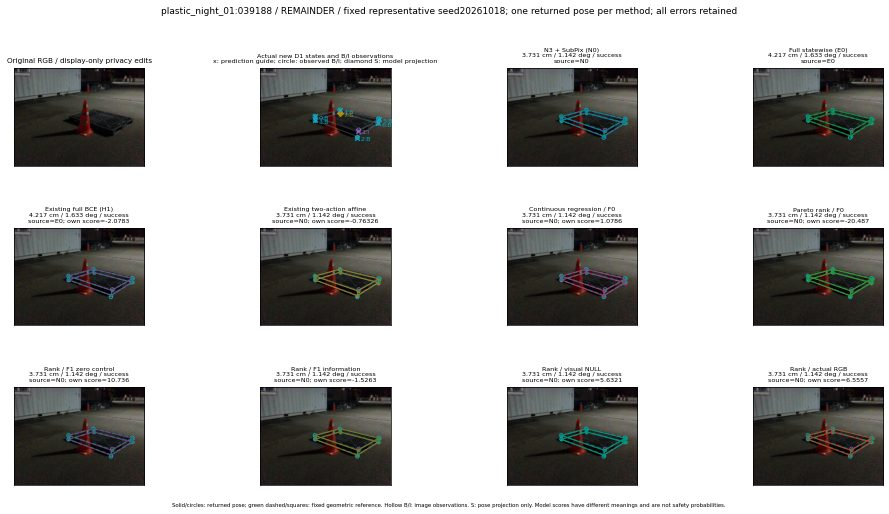

실선은 반환 자세, 초록 점선은 고정 기하 참조입니다. S는 영상 관측이 아닙니다. 점수는 모델별 의미가 다르며 보정된 안전 확률이 아닙니다. 개인정보 처리는 표시 사본에만 적용했습니다.
| 방법·seed | 위치 / 회전 / 공동성공 | 실제 출처 | 선택 후보 | 각 모델 자체 점수 |
|---|---|---|---|---|
| N0 | 3.731 cm / 1.142 deg / success | N0 | N/A | N/A |
| E0 | 4.217 cm / 1.633 deg / success | E0 | N/A | N/A |
| E0_REGENERATED | 4.217 cm / 1.633 deg / success | E0 | E0_REGENERATED | N/A |
| POSEFIX_SUBPIX_PF_ANCHOR | 3.99 cm / 1.314 deg / success | OTHER | N/A | N/A |
| POSEFIX_SUBPIX_YOLO_ANCHOR | 3.966 cm / 1.18 deg / success | OTHER | N/A | N/A |
| D1_H1_MLP_s20261018 | 4.217 cm / 1.633 deg / success | E0 | E0_REGENERATED | -2.0783238410949707 |
| D1_H1_MLP_s20261019 | 4.217 cm / 1.633 deg / success | E0 | E0_REGENERATED | -1.9381988048553467 |
| D1_H1_MLP_s20261020 | 3.731 cm / 1.142 deg / success | N0 | N0 | -3.0000665187835693 |
| D1_H1_PAIR_MLP_s20261018 | 3.731 cm / 1.142 deg / success | N0 | N0 | -1.213233470916748 |
| D1_H1_PAIR_MLP_s20261019 | 3.731 cm / 1.142 deg / success | N0 | N0 | -1.5361014604568481 |
| D1_H1_PAIR_MLP_s20261020 | 3.731 cm / 1.142 deg / success | N0 | N0 | -2.152249574661255 |
| D1_H1_PAIR_ROLE_AFFINE_s20261018 | 3.731 cm / 1.142 deg / success | N0 | N0 | -0.7632646560668945 |
| D1_H1_PAIR_ROLE_AFFINE_s20261019 | 4.217 cm / 1.633 deg / success | E0 | E0_REGENERATED | -0.8189907073974609 |
| D1_H1_PAIR_ROLE_AFFINE_s20261020 | 3.731 cm / 1.142 deg / success | N0 | N0 | -0.51497483253479 |
| R_CONT_F0_s20261018 | 3.731 cm / 1.142 deg / success | N0 | N0 | 1.078616976737976 |
| R_CONT_F0_s20261019 | 3.731 cm / 1.142 deg / success | N0 | N0 | 1.0319331884384155 |
| R_CONT_F0_s20261020 | 3.731 cm / 1.142 deg / success | N0 | N0 | 1.162906527519226 |
| R_ORDER_F0_s20261018 | 3.731 cm / 1.142 deg / success | N0 | N0 | -20.486888885498047 |
| R_ORDER_F0_s20261019 | 3.731 cm / 1.142 deg / success | N0 | N0 | -7.1236042976379395 |
| R_ORDER_F0_s20261020 | 3.731 cm / 1.142 deg / success | N0 | N0 | 6.471307277679443 |
| R_ORDER_F1_ZERO_s20261018 | 3.731 cm / 1.142 deg / success | N0 | N0 | 10.736336708068848 |
| R_ORDER_F1_ZERO_s20261019 | 3.731 cm / 1.142 deg / success | N0 | N0 | -2.4893600940704346 |
| R_ORDER_F1_ZERO_s20261020 | 3.731 cm / 1.142 deg / success | N0 | N0 | 2.3210206031799316 |
| R_ORDER_F1_s20261018 | 3.731 cm / 1.142 deg / success | N0 | N0 | -1.5263206958770752 |
| R_ORDER_F1_s20261019 | 3.731 cm / 1.142 deg / success | N0 | N0 | 5.6671648025512695 |
| R_ORDER_F1_s20261020 | 3.731 cm / 1.142 deg / success | N0 | N0 | 3.4975693225860596 |
| V_ORDER_NULL_s20261018 | 3.731 cm / 1.142 deg / success | N0 | N0 | 5.632120132446289 |
| V_ORDER_NULL_s20261019 | 3.731 cm / 1.142 deg / success | N0 | N0 | 2.1428749561309814 |
| V_ORDER_NULL_s20261020 | 3.731 cm / 1.142 deg / success | N0 | N0 | -0.13082438707351685 |
| V_ORDER_RGB_s20261018 | 3.731 cm / 1.142 deg / success | N0 | N0 | 6.555670738220215 |
| V_ORDER_RGB_s20261019 | 3.731 cm / 1.142 deg / success | N0 | N0 | 1.2956510782241821 |
| V_ORDER_RGB_s20261020 | 3.731 cm / 1.142 deg / success | N0 | N0 | -4.087602138519287 |